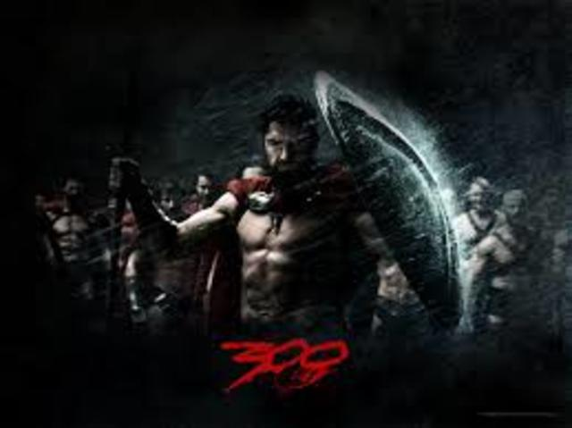
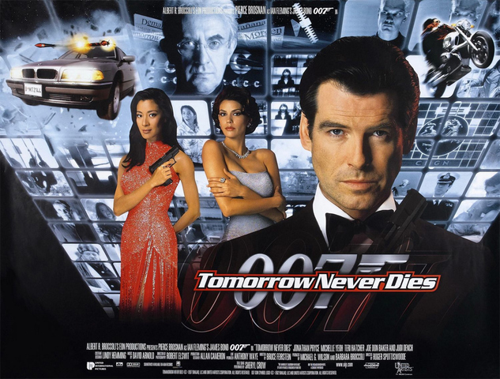
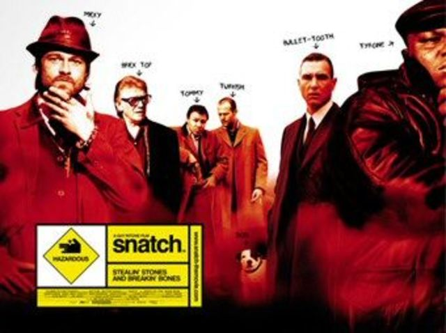

Ending a year off as part of my studies in corporate finance at Paris 5. Curious about civic tech.
See my complete profile|  |
300300 is a 2006 American epic war film based on the 1998 comic series 300 by Frank Miller and Lynn Varley. Both are fictionalized retellings of the Battle of Thermopylae within the Persian Wars. |
|  |
Tomorrow Never DiesTomorrow Never Dies (1997) is the eighteenth spy film in the James Bond series to be produced by Eon Productions, and the second to star Pierce Brosnan as the fictional MI6 agent James Bond. |
|  |
SnatchSnatch (stylised as snatch.) is a 2000 British crime comedy film written and directed by Guy Ritchie, featuring an ensemble cast. |